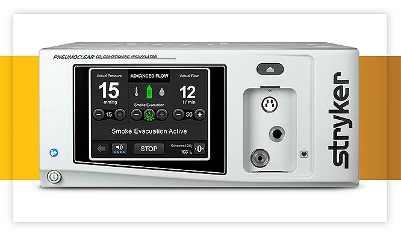
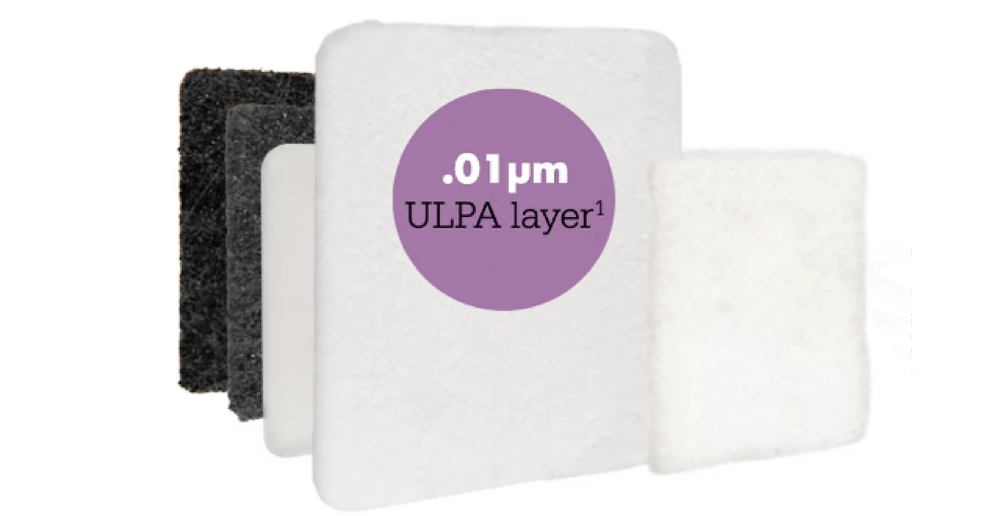

Stryker PneumoClear는 기복(CO₂ 공급), 연기 배출, 가열·가습을 하나의 튜브셋으로 통합한 인서플레이터입니다. 기존 카메라·광원·모니터는 그대로 두고, 인서플레이터만 먼저 평가해 보실 수 있습니다.

복강경 수술에서 전기소작 연기는 수술 시야를 가리고, 수술팀이 매 수술마다 노출되는 환경 요인이기도 합니다. 인서플레이터는 카메라 시스템과 독립적으로 교체·평가할 수 있는 장비입니다.
튜브셋의 배연 루멘으로 연기를 배출하면서 기복압을 유지하도록 설계되었습니다. 연기 제거 수준은 본체에서 단계별로 조절합니다.
배출되는 가스는 다층 필터(흡수층, ULPA, PVDF, 활성탄)를 통과합니다. 수술실 환기와 마스크 착용 등 다른 대책과 함께 쓰는 보조 수단입니다.
튜브셋은 트로카에 루어락(Luer Lock)으로 연결합니다. 카메라 시스템 교체 없이 한 방에서 먼저 써 보고 판단하실 수 있습니다. 트로카 호환은 Demo 때 현장에서 함께 확인합니다.
모든 이미지는 Stryker 공식 제품 페이지와 공식 설명서에서 가져온 원본입니다.
화면 이미지는 설명용 예시입니다.

설명서(IFU)와 제조사 자료 기준으로 정리했습니다. 효능 수치는 제조사 시험 결과이며 병원 환경에서 달라질 수 있습니다.
배연 루멘이 있는 튜브셋을 사용하면 수술 중 연기를 배출합니다. 본체에서 배연 단계를 올리거나 내리고, 켜기·끄기·일시정지를 합니다.
기복을 멈춘 뒤 복강 내 남은 CO₂를 배연 라인으로 제거해 약 3 mmHg까지 낮춥니다. 이 가스도 ULPA 필터를 통과합니다.[2]
가열, 가습, 배연을 하나의 일회용 튜브셋으로 쓸 수 있습니다. 가습 튜브셋은 약 200 L의 가습 가스를 제공하고, 200~300 L 소모마다 재충전합니다.
Standard, High Flow/Bariatric, Pediatric, Advanced Flow, Vessel Harvest, TAMIS 모드를 지원합니다. 모드별 압력·유량 한도는 아래 사양 표를 참고하세요.
과압 시 HEPA 필터를 거쳐 배출 밸브로 압력을 낮춥니다. 액체가 장비로 유입되면 오염 경고가 뜨고, 진행 중인 수술은 마무리할 수 있습니다.
흡입 기구 사용이나 로봇 수술에서 생길 수 있는 큰 누출을 보상하도록 설계된 모드로, 최대 유량이 50 L/min입니다.
출처: PneumoClear 사용설명서(IFU, P31694 Rev. H)와 Short Instruction.
| 운용 모드 | 대상 환자 | 최대 설정 압력 | 최대 유량 |
|---|---|---|---|
| Standard | 14세 초과, BMI 30 kg/m² 미만 | 30 mmHg | 40 L/min |
| High Flow / Bariatric | 14세 초과, BMI 30 kg/m² 초과 | 30 mmHg | 45 L/min |
| Pediatric | 14세 이하(신생아·영유아·소아) | 20 mmHg | 20 L/min |
| Advanced Flow | 14세 초과(로봇 보조 포함, 큰 누출 보상) | 30 mmHg | 50 L/min |
| Vessel Harvest | 14세 초과(내시경 혈관 채취) | 20 mmHg | 10 L/min |
| TAMIS | 14세 초과(경항문 최소침습수술) | 20 mmHg | 40 L/min |
| 일회용 튜브셋 (색상 / 품번) | 구성 |
|---|---|
| High-Flow Tube Set (파랑 / 0620-050-100) | 필터 |
| Heated High-Flow Tube Set (초록 / 0620-050-200) | 필터 + 가스 가열 |
| Smoke Evacuation High-Flow Tube Set (검정 / 0620-050-250) | 필터 + 배연 루멘(필터 포함) |
| Heated Humidified Smoke Evacuation Tube Set (주황 / 0620-050-350) | 필터 + 가열 + 가습 + 배연 루멘(필터 포함) |
최대 유량 50 L/min · 설정 압력 1~30 mmHg(1 mmHg 단위) · 크기 318 × 149 × 429 mm(가스 커넥터 제외) · 무게 약 10 kg. CO₂ 가스는 중앙 공급 또는 보틀을 사용합니다.
식약처 수입 허가 수인19-4592(기복기, 2등급). 본체와 튜브셋이 구성품으로 등재돼 있습니다(사내 인허가 목록 기준). 최신 허가증 사본은 요청 시 제공합니다.
PubMed·Europe PMC에서 확인한 논문과 제조사 공식 자료만 실었습니다. 각 항목에 근거의 종류와 한계를 함께 적었고, 링크를 누르면 원문(또는 초록)으로 이동합니다.
수술 연기에는 휘발성 유기화합물, 다환방향족탄화수소, 입자상 물질, 생존 가능한 미생물이 포함됩니다. 순간 농도는 높아도 대체로 직업 노출 기준 이하였다는 보고가 많지만, 수술실 환기·고효율 마스크와 함께 국소 배연 장치가 노출을 줄인다고 정리했습니다. 원문 PMC · doi:10.1093/toxsci/kfae005
37편을 검토해 수술 연기가 수술팀에 미치는 영향(자극, 독성, 발암 가능성, 두통·어지럼 등)과 저감 전략을 정리했습니다. 원문 PMC · doi:10.18502/ijph.v51i1.8289
CO₂ 배출과 입자 여과 기술은 수술실 노출 위험을 줄일 수 있다고 권고하며, PneumoClear를 0.08 µm ULPA 필터와 Desufflation 모드를 가진 폐회로형 시스템의 하나로 소개했습니다. 바이러스가 연기에서 확인됐다는 명확한 근거는 없다고도 밝혔습니다. 원문 PMC · doi:10.1111/bju.15105
추출기, 필터, 비필터 방식 등 시판 연기 관리 장치를 비교 정리한 표에 PneumoClear가 포함돼 있습니다. 연기 위험을 정량화하기엔 근거가 부족하지만 관리 단계는 취할 수 있다는 결론입니다. 원문 PMC · doi:10.1002/bjs.11679
연기 배출 사용과 에너지 기구 최소화를 권고하고, 장치별 필터 사양 표에서 PneumoClear를 0.051 µm 입자 기준으로 정리했습니다. 원문 PMC · doi:10.1007/s11605-020-04592-9
복강경 수술의 위험 저감 전략을 검토하면서 PneumoClear를 ULPA 필터를 사용하는 인서플레이터로 언급했습니다. 원문 PMC · doi:10.1097/SLA.0000000000004010
무작위 대조시험 13편을 합쳐 가온·가습 CO₂가 찬 건조 CO₂보다 수술 중 심부체온을 평균 0.3℃ 높게 유지했습니다. 원문 PMC · doi:10.1111/ases.12350
22편을 분석한 결과 심부체온은 약간 높았지만 통증, 모르핀 사용량, 재원일수에서 일관된 개선은 확인되지 않았습니다. 120분 넘는 수술에서는 체온 이점이 있었으나, 비뚤림 위험이 낮은 시험만 보면 사라졌습니다. 그래서 이 제안서는 가열·가습을 환자 결과 개선 수단으로 홍보하지 않고 선택 가능한 튜브셋 옵션으로만 소개합니다. 원문 PMC · doi:10.1002/14651858.CD007821.pub3
로봇 흉부수술에서 PneumoClear의 연속 기복·배연과 Desufflation 기능을 이용해 포트로 접근하는 폐쇄형 구성을 설명했습니다. 효능을 검증한 연구가 아니라 사용 방법을 기술한 보고입니다. 원문 PMC · doi:10.1016/j.xjtc.2020.05.017
태아경 수술(50례, 100% 완료)에서 PneumoClear의 가열·가습 CO₂를 사용했다고 기술했습니다. 장치 자체를 평가한 연구는 아니며 사용 사례로만 인용합니다. 원문 PMC · doi:10.1002/uog.70013
로봇 전립선절제(8 mmHg)에서 AirSeal(n=20)과 PneumoClear(n=20)를 비교한 40명 규모 예비 RCT입니다. 이 연구에서는 AirSeal 군이 수술 중 유의한 통각 자극 빈도(20.7 대 33.5/시간)가 낮고 수술 시간이 짧았으며, 저자들은 더 큰 규모의 RCT가 필요하다고 밝혔습니다. 우열을 단정할 근거가 아니며 Demo에서 직접 평가하시도록 하는 이유입니다. 원문 PMC · doi:10.1002/bco2.70226
5종 인서플레이터(PneumoClear 포함)로 돼지 사체 모델에서 가스 누출 속도를 측정했습니다. 기구별 누출 속도는 인서플레이터 종류나 압력이 달라져도 크게 변하지 않았고, 연구진은 트로카 설계 개선이 필요하다고 결론 냈습니다. 연기 관리에는 장비와 함께 트로카 선택과 누출 관리가 병행돼야 한다는 뜻입니다. 원문 PMC · doi:10.1007/s00464-022-09242-6
[1] Stryker. PneumoClear Insufflator 제품 페이지 — stryker.com
[2] Stryker Endoscopy. PneumoClear and PneumoSure Filtration (고객 안내문, 2020-03-25, SAGES 사이트 게시) — PDF
[3] Stryker. PneumoClear CO₂ Conditioning Insufflator Instructions for Use (P31694 Rev. H).
제조사 자료의 수치(필터 효율, 기능)는 제조사 시험 결과이며 독립 검증 결과가 아닙니다. 논문 요약은 초록과 원문 공개 내용을 기준으로 작성했습니다.
한 개 수술방에서 평가용으로 시작하는 구성을 제안드립니다. 기간과 수술 종류는 병원 일정에 맞춰 협의합니다.
수술팀이 같은 기준으로 기록할 수 있도록 만든 체크 항목입니다. 인쇄해서 쓰실 수 있습니다.
각 항목은 수술 종류, 사용 모드, 압력 설정과 함께 기록하면 비교하기 좋습니다.
PneumoClear는 인서플레이터 본체와 일회용 튜브셋으로 구성되며, 튜브셋은 트로카에 루어락으로 연결합니다. 카메라 시스템 교체 없이 평가할 수 있습니다. 병원에서 쓰는 트로카와의 연결은 Demo 전에 함께 확인합니다.
제조사는 유입과 배출을 함께 관리해 압력을 안정적으로 유지하도록 설계했다고 설명합니다. 실제 안정성은 수술 종류와 누출 정도에 따라 달라질 수 있어 Demo에서 직접 확인하시길 권합니다.
아닙니다. 튜브셋은 용도별로 4종이 있으며, 배연만 필요한 검정(0620-050-250)부터 가열·가습·배연 일체형 주황(0620-050-350)까지 선택할 수 있습니다. 가열·가습의 환자 결과 이점은 근거가 일관되지 않아 선택 옵션으로 안내드립니다.
모드별 대상이 구분돼 있습니다. 14세 이하는 Pediatric 모드, BMI 30 초과 환자는 High Flow/Bariatric 모드를 사용하도록 설명서에 안내돼 있습니다.
Demo 조건은 제조사 승인 사항으로 확정되는 대로 서면 안내드립니다. 이 문서에서는 다루지 않습니다.
수술방 일정과 평가하실 수술 종류만 알려 주시면 Demo 일정과 준비 사항을 정리해 드립니다.